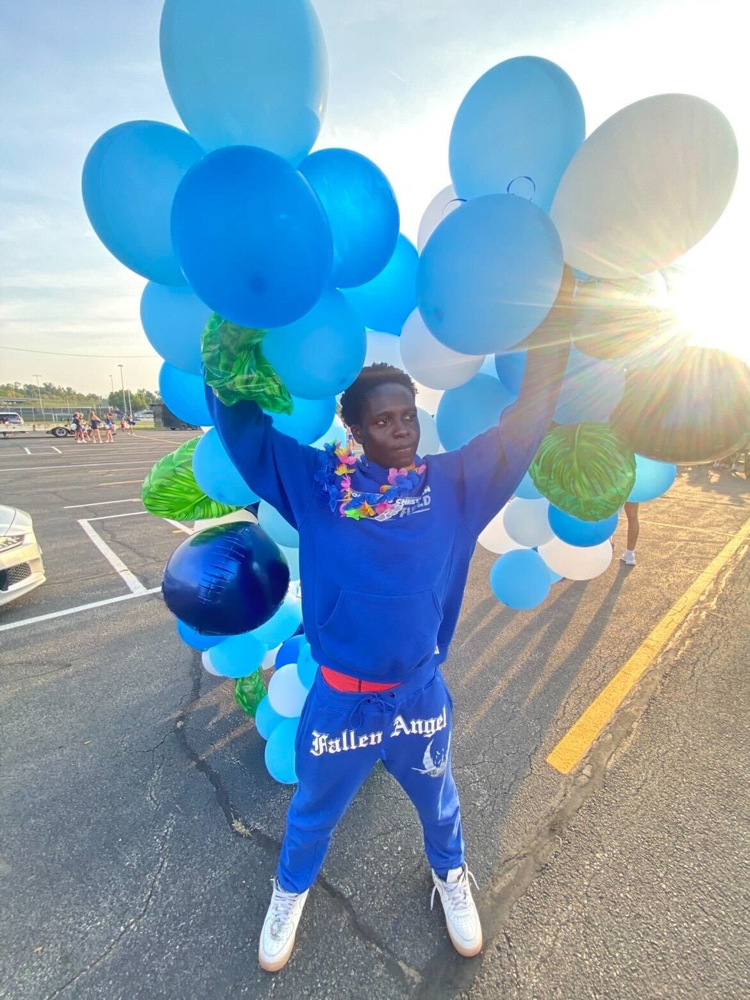

World Views
By Maiko Deogratias | November 28, 2025
Hello, my name is Maiko Deogratias. As an African American growing up in the U.S., even in this time period, it's still difficult; facing significant racism and skepticism about my belonging based on skin color or origin remains challenging even today. I joined Bridges of Voices to make a difference and to demonstrate that skin color and race do not define us. I joined Bridges of Voices because I wanted to make a difference, and I wanted to show others that skin color and race don’t define us. It’s about how you connect with others of different ethnicities or races. Another reason I joined Bridges of Voices was to bring together all minorities—Black, Hispanic, LGBTQ+, and women—who don’t feel like they have a voice in society. To fulfill our mission, we must start from within minority groups and unify them first before we can change the world's opinion. I hope this project can help change how the world views all minorities. One challenge I’ve faced growing up as an African American is that I didn’t speak English for a long time, and because of that, the world saw me differently; they judged me, spoke badly about me, and didn’t see me as one of them. This issue still exists today, not just for me, but for many people moving to America, especially if they aren’t fluent in English. There are many problems worldwide that I hope we can address or at least improve with this project.